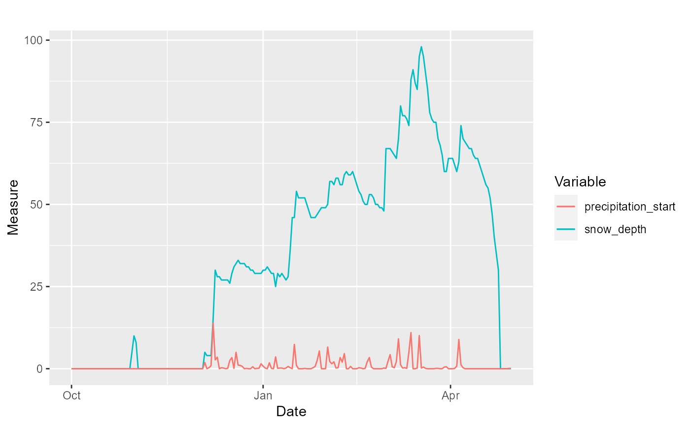
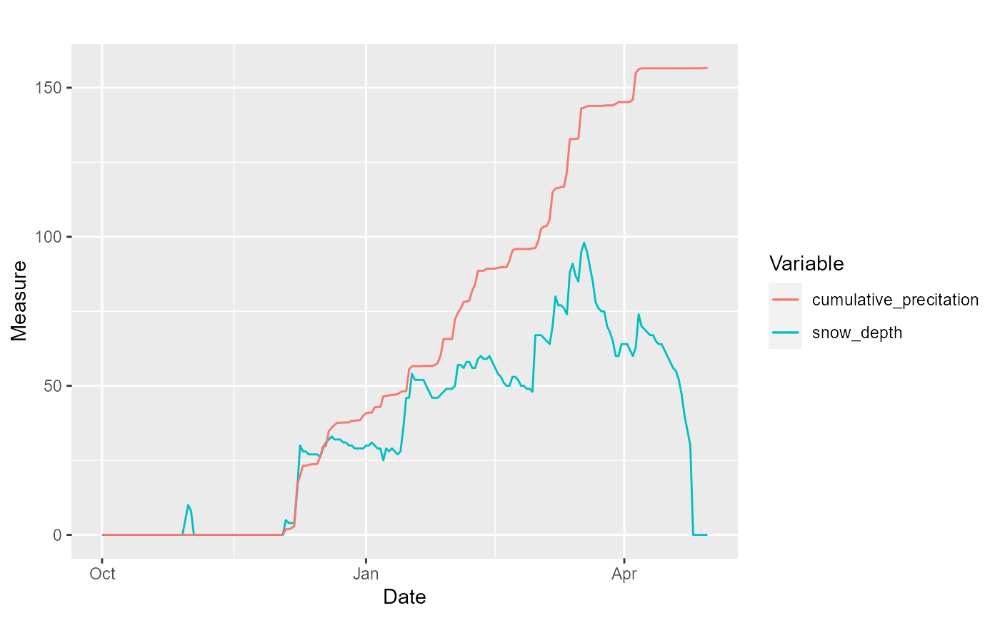
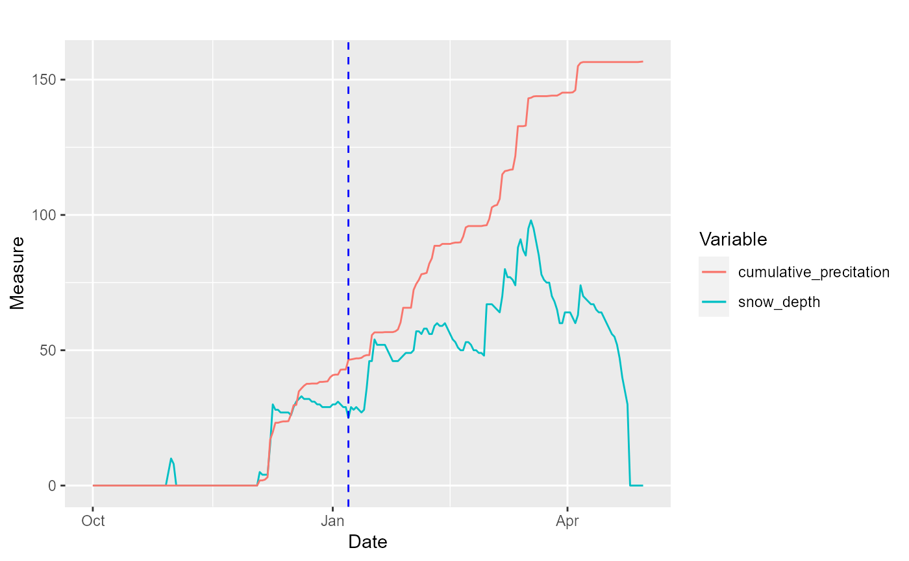
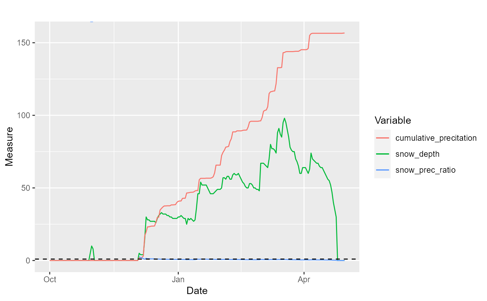
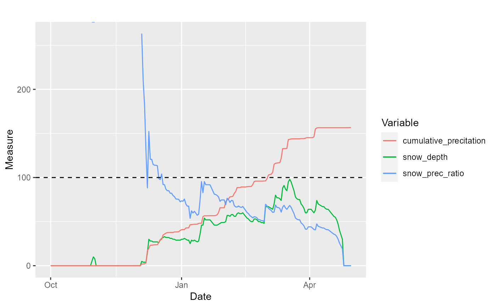
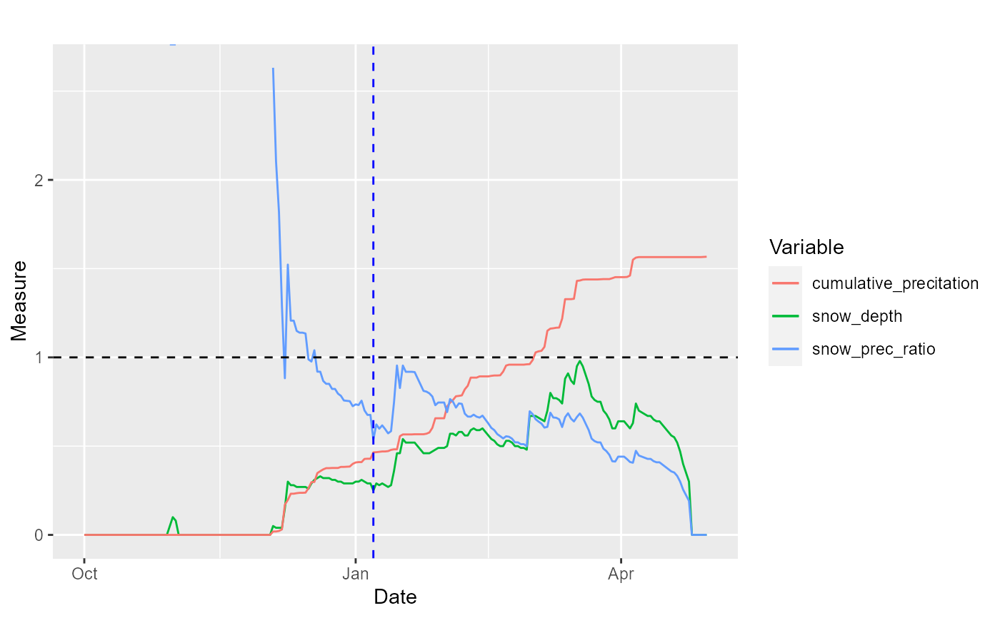

plot_weather.RdThis function plots weather variables and indices calculated with the function
analyze_weather.
plot_weather( weather_analyzed, term = c("snow_depth", "precip", "temp_min", "temp_max", "temp_avg", "cumulative_precitation", "prec_snow_ratio", "prec_snow_diff", "snow_prec_ratio", "snow_prec_diff")[c(1, 2)], factor_mult = rep(1, length(term)), add_events = c("", "events3", "events4")[1], first_half = TRUE, cols = c(), units = c(), title = "" )
| weather_analyzed | data.frame. output `data.frame` from the |
|---|---|
| term | character. term to be plotted. |
| factor_mult | numeric, vector. numeric factor to be multipled by each variable (defined in the argument `term`), so that all variables are plotted in the same scale |
| cols | character or number. vector. sequence of colors for plotting each term, in the same order as term. |
| units | character. vector. vector of units of each of the terms. |
a ggplot with the terms plotted.
library(ggplot2) library(dplyr) data(weather_mittadalen) weather_2019 <- weather_mittadalen %>% dplyr::filter(year == 2019) weather_condition_2019 <- with(weather_2019, analyze_weather(date, snow_depth, prec, temp_min, temp_max, temp_avg, start = "first_permanent_snow", plot_first_snow = T))#> Warning: Removed 29 row(s) containing missing values (geom_path).plot_weather(weather_condition_2019, term = c("snow_de", "cum", "snow_prec_ratio"), factor_mult = c(1,1,100))#> Warning: Removed 29 row(s) containing missing values (geom_path).plot_weather(weather_condition_2019, term = c("snow_de", "cum", "snow_prec_ratio"), factor_mult = c(.01,.01,1), add_events = "events3")#> Warning: Removed 29 row(s) containing missing values (geom_path).